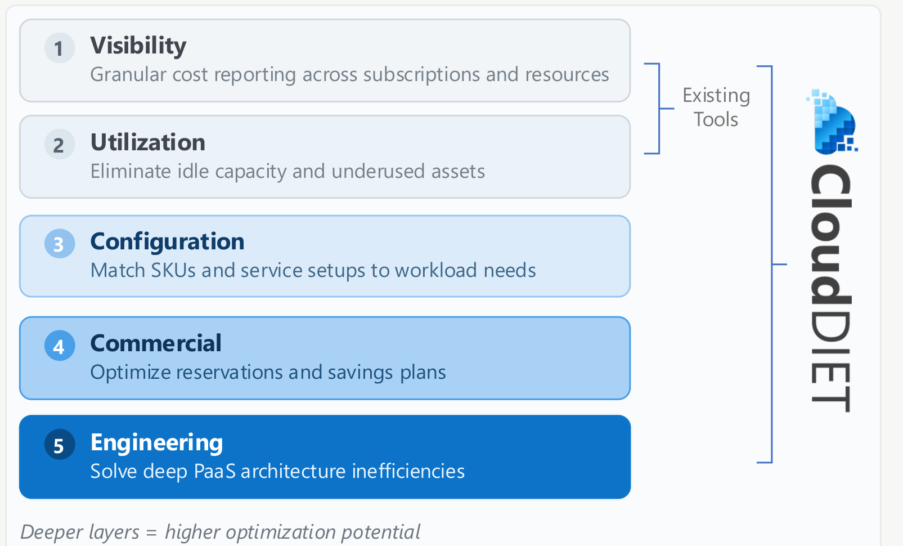

CloudDIET Overview
From spend visibility to prioritized engineering action. Existing tools surface spend — CloudDIET finds the configuration, commercial, and architectural root causes of waste.
Existing tools reach visibility and utilization. CloudDIET goes deeper, where the higher optimization potential lives.
Surfaces technical waste that spend dashboards miss.
Decodes Azure pricing, SKUs, and commitment models.
Finds misconfigurations and orphaned resources fast.
Beyond reporting to engineering-led optimizations.

Start a free preview and let CloudDIET profile up to 3 nominated subscriptions.